№ 002. KVAK.EXE
Квак, где мои вещи?!
Браузерная hidden-object игра с концептом рекламных интеграций брендов
- Роль
- Концепция, иллюстрации, моушн, арт-дирекшн, UX/UI
- Инструменты
- Illustrator, Inkscape, After Effects, Нейросети, HTML, CSS, JavaScript

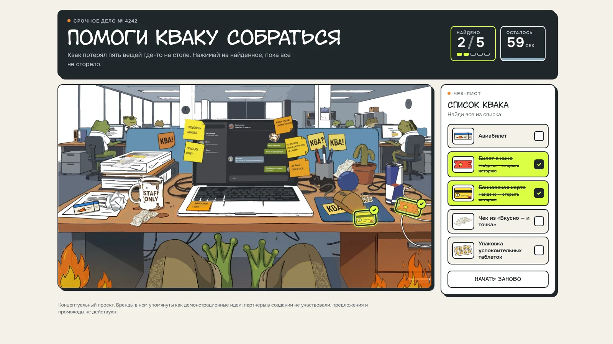
01 Контекст и цели
Это концепт-проект в жанре hidden object, где игроку нужно отыскать спрятанные предметы на одной насыщенной сцене.
Целевая аудитория — уставшие от рутины офисные сотрудники, поэтому настроение у игры сознательно безумное: жабы за компьютерами, стикеры «КВА!» и пожар в реальном времени.
Механика изначально задумывалась под спецпроект с нативными интеграциями — по аналогии с Aviasales, Кинопоиском или Т-Банком. Но в процессе я решила не городить скучные дисклеймеры и превратила всех спонсоров в вымышленные жабьи бренды.
02 Задача
Хотелось сделать смешную и лёгкую игру, в которую можно зайти без долгих правил. Я очень люблю жабок, поэтому подумала: а что, если посадить жабку в офис, а горящие дедлайны сделать буквально горящими?
03 Концепция и визуальный стиль
Весь интерфейс собран в стиле инди-зин комикса.
В графике я объединила нейросети и ручной рисунок. На старте растровый фон сцены сгенерировала в Gemini, а часть мелких предметов набросала через Text to Vector в Illustrator. Но потом так увлеклась, что решила сама отрисовать и остальные вещи, и самого Квака во всех его состояниях.
Прямо посреди работы у меня закончился триал Illustrator, так что финального персонажа и новые детали я доделывала уже в Inkscape, разобравшись в программе за один день.
04 Как я к этому пришла
Игра прошла четыре версии. В каждой я проверяла одно: понятно ли за пару секунд, что делать, и есть ли у игры характер.
-
Версия 1: Прототип
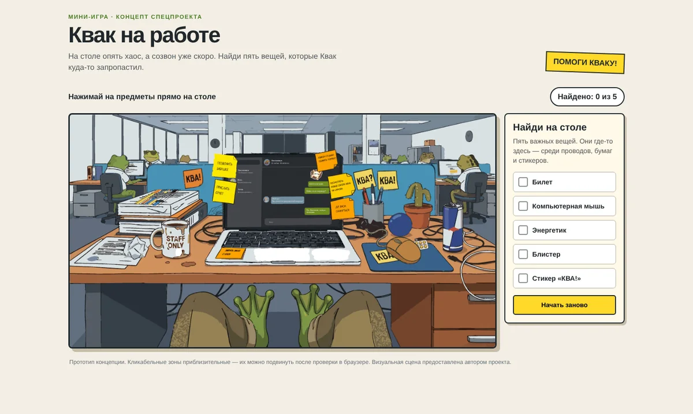
Прототип «Квак на работе» Попробовала изобразить свою задумку с помощью Claude Code.
-
Версия 2: Персонаж
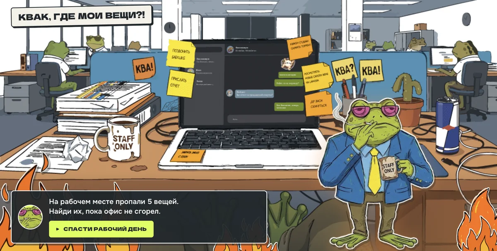
Сцена на весь экран и образ Квака Добавила Квака – офисного сотрудника, которому осточертело всё на свете и он мечтает угнать в отпуск. Поняла, что персонаж теряется на фоне главного экрана, где нужно искать предметы, убрала.
-
Версия 3: Переосмыслила первый экран
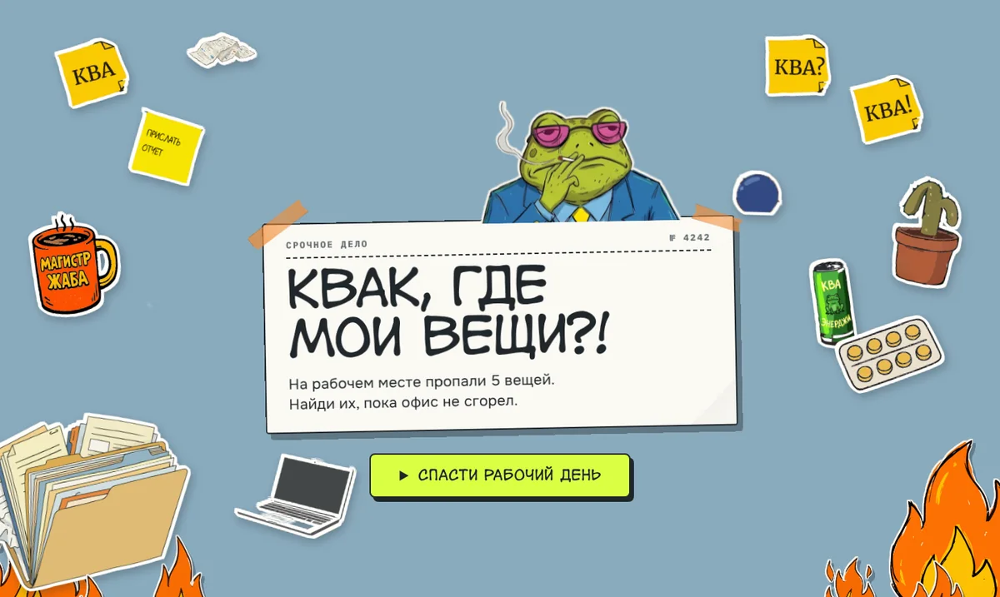
Обложка-объявление Вся вводная собралась на одном листке «Срочное дело», кнопка одна.
-
Версия 4: Свой Квак
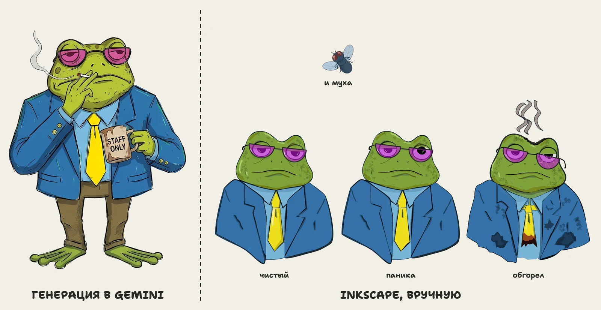
Черновик от нейросети, потом дорисовала сама Сгенерированный Квак курил и был нарисован в чужой манере — для игры с брендами не хотелось представлять такого персонажа. Поэтому я перерисовала его сама в Inkscape.


05 Ключевые UX/UI-решения
-
Правила в одну строчку
На обложке сразу даётся суть игры («На рабочем месте пропали 5 вещей. Найди их, пока офис не сгорел») и единственная кнопка «Спасти рабочий день».
-
Цветовое кодирование
Лаймовый оттенок отвечает только за интерактив и прогресс, а оранжевый закреплён за огнём и тревогой. Игрок считывает эту логику с первых секунд без подсказок.
-
Нативная механика интеграций
Когда игрок находит предмет, открывается карточка партнёра в его фирменном стиле с шуткой про Квака, репликой героя и бонусом вроде промокода или пробной подписки. Бренд органично вплетается в сюжет и не ломает темп.
-
Визуальный чек-лист
Справа висит список пропавших вещей с иконками. Найденные предметы загораются лаймом и вычёркиваются, поэтому прогресс понятен даже без цифр.
-
Сертификат в финале
В конце игрок получает карточку «Офис выжил. Менталка Квака тоже.» со временем прохождения, количеством находок и промахов, чтобы её можно было заскринить и скинуть друзьям.
-
Интерактивный ноутбук
Если кликнуть по ноутбуку на столе, крупно откроется рабочий чат Квака, который в общей сцене слишком мелкий. Этот клик не засчитывается как ошибка, а таймер на время чтения ставится на паузу.
-
Пожар вместо скучного таймера
Пламя разгорается в три этапа по мере того, как истекает минута, и замирает во время пауз. Игрок чувствует, сколько времени осталось, буквально периферийным зрением.
-
Отдельная вёрстка под разные экраны
Для обложки я сделала три разные композиции под десктоп, планшет и смартфон, чтобы листок с правилами и кнопка старта всегда помещались в первый экран без скролла.
06 Экраны, макеты и адаптив

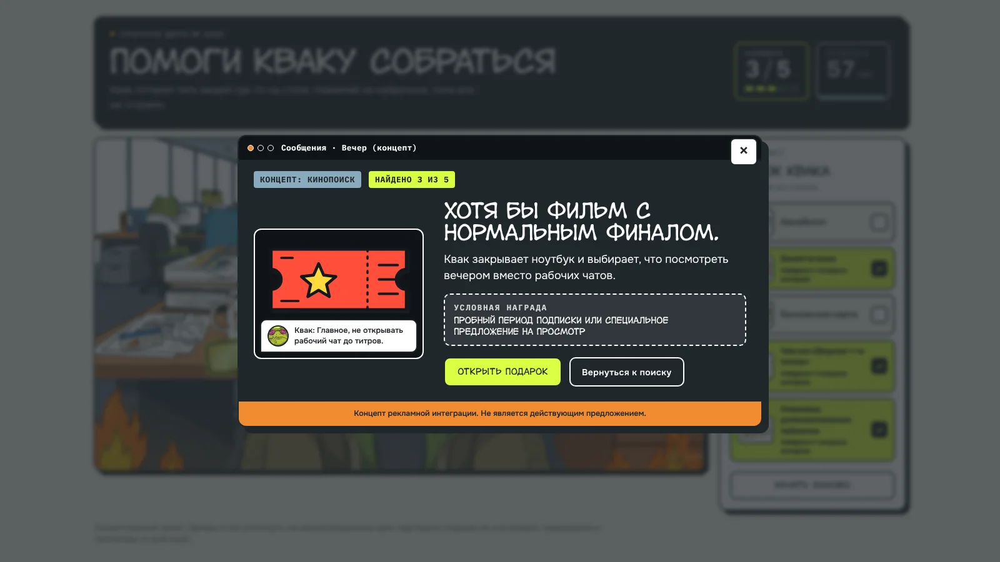

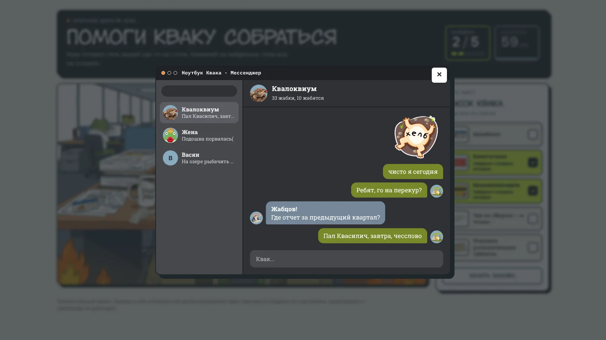

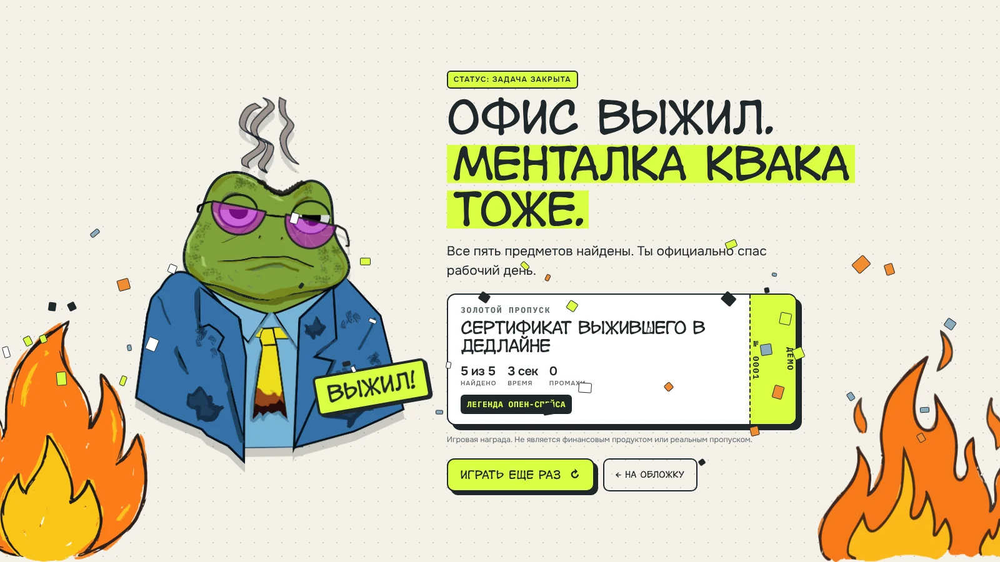

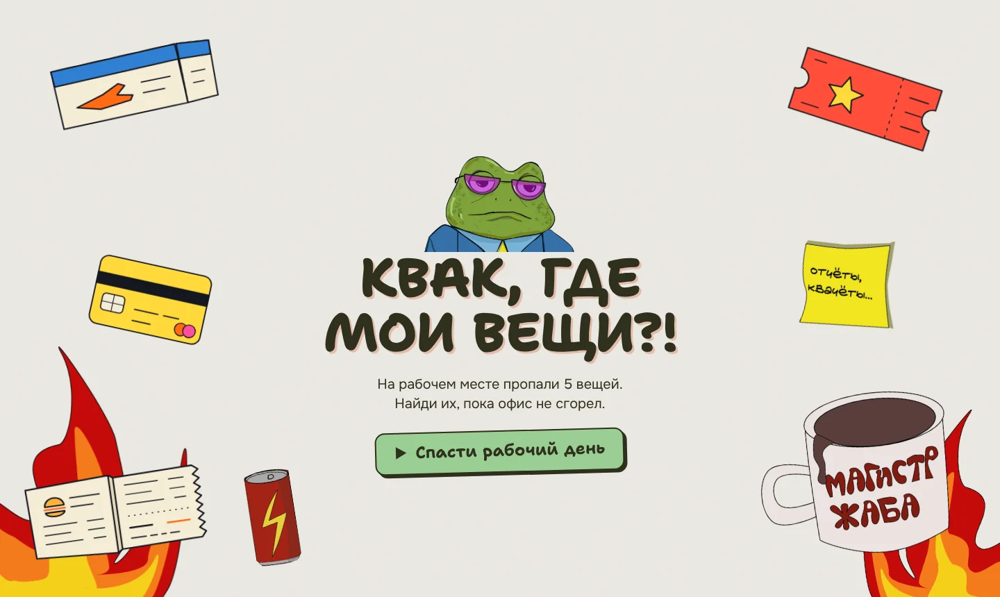

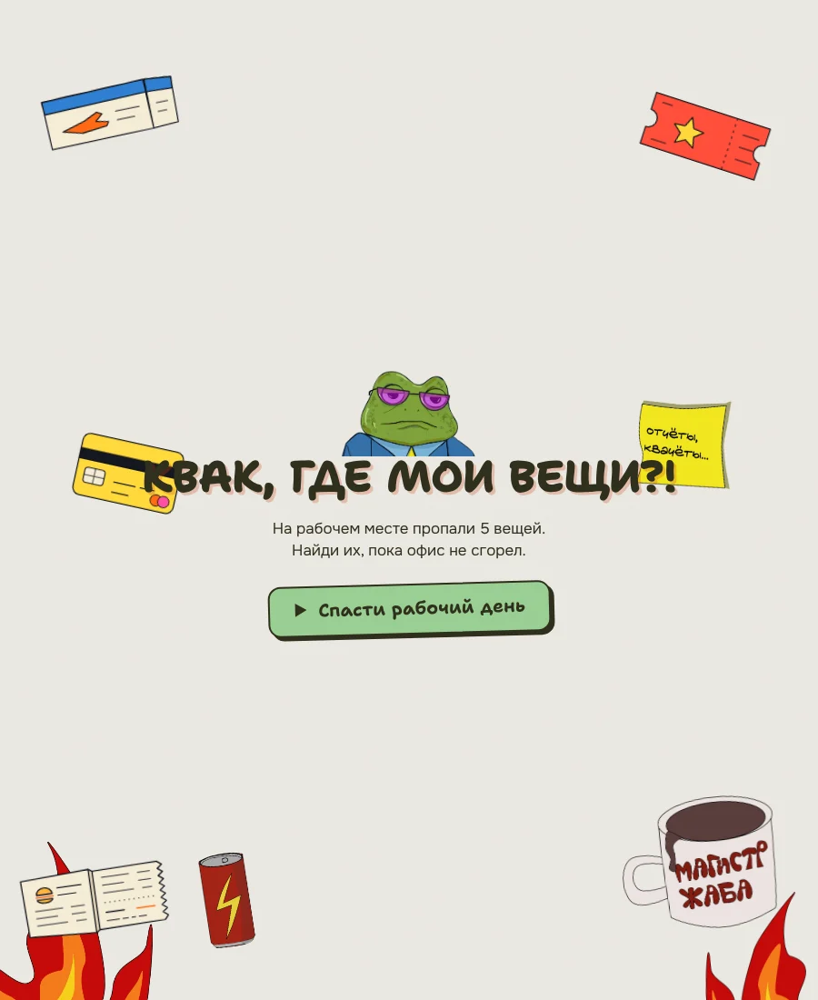

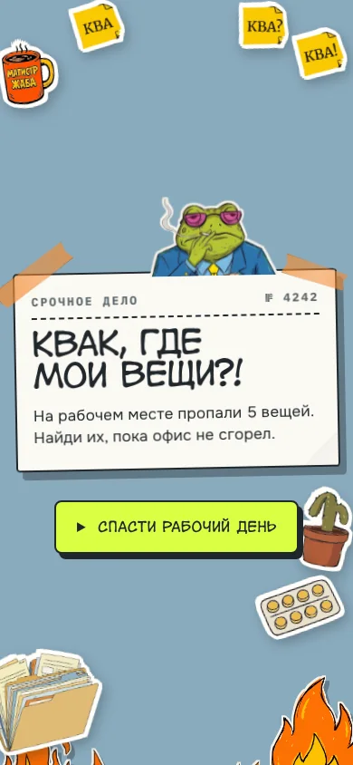

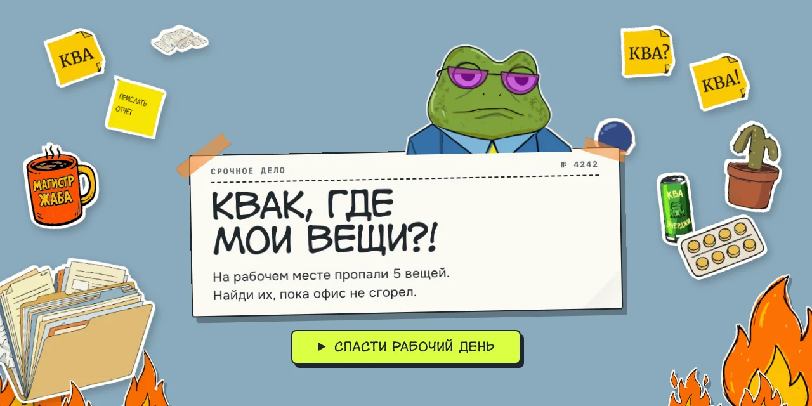
07 Видео и анимация
08 Реализация
- Написала всё на чистых HTML, CSS и JavaScript без сборщиков, поэтому игра запускается простым двойным кликом по index.html.
- Всю пластику (огонь, моргание и почёсывание лапой) сначала настроила в After Effects. Затем с помощью нейросети перевела этот ролик в чистый CSS, чтобы не утяжелять страницу видеофайлами, а паузы между движениями сделала случайными от 10 до 20 секунд.
- Каждому языку пламени задала свой период, амплитуду и сдвиг, благодаря чему огонь горит живо и не выглядит зацикленным.
- Все шрифты подключены локально, чтобы игра не зависела от внешних сервисов, а личный рекорд игрока сохраняется прямо в его браузере.